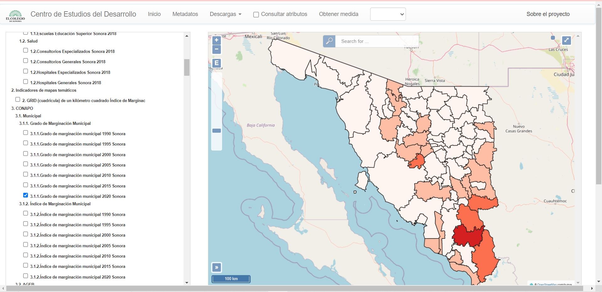

Fue desarrollado como parte de los objetivos del proyecto Focalización del combate a la pobreza: estimaciones a pequeña escala - Conacyt. Conforma un sistema de consulta espacial a partir de fuentes oficiales, con el aporte de ofrecer nuevas representaciones de la información, además, de resaltar la comparación inter-escalar, de diversos indicadores de medición y en diferentes periodos de tiempo.
 Enlace del GeoportalConsultoría dedicada a proyectos del ámbito geoespacial, brindamos capacitaciones y servicios diversos de cartografía, así como productos derivados del manejo de vehículos aéreos no tripulados
Enlace a Facebook